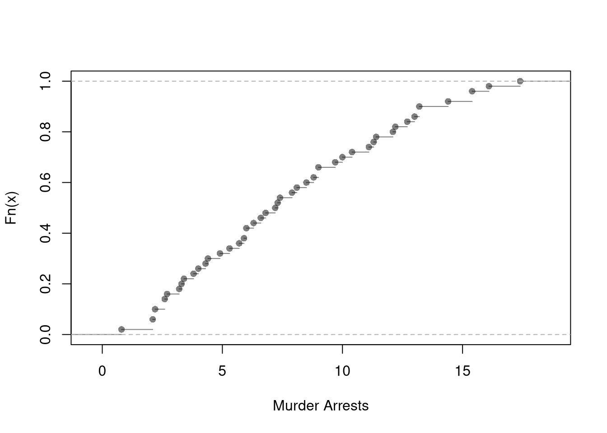
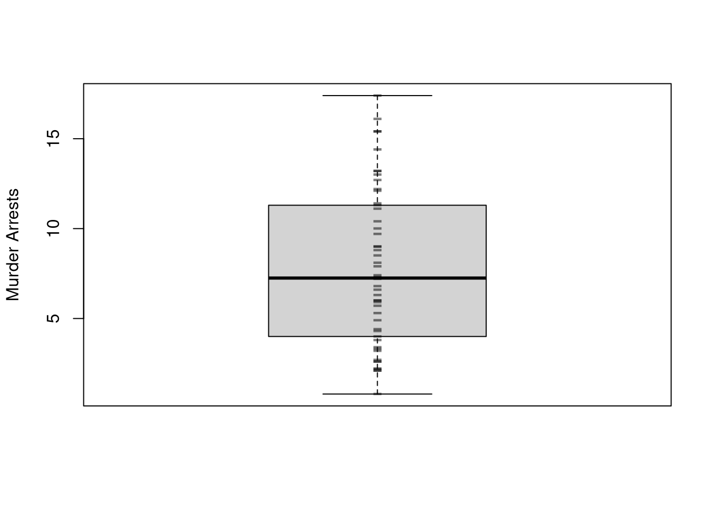

4 Data
4.1 Types
The two basic types of data are cardinal and factor data. We can further distinguish between whether cardinal data are discrete or continuous. We can also further distinguish between whether factor data are ordered or not
- cardinal: the difference between elements always mean the same thing.
- discrete: E.g., 2-1=3-2.
- continuous: E.g., 2.11-1.4444=3.11-2.4444
- factor: the difference between elements does not always mean the same thing.
- ordered: E.g., First place - Second place ?? Second place - Third place.
- unordered (categorical): E.g., A - B ????
## [1] 1 2 3## [1] "integer"## [1] 1.1000000 0.6666667 3.0000000## [1] "numeric"## [1] A B C
## Levels: A < B < C## [1] "ordered" "factor"## [1] Leipzig Los Angeles Logan
## Levels: Leipzig Logan Los Angeles## [1] "factor"R also allows for more unstructured data types.
## [1] "hello world" "hi mom"## [[1]]
## [1] 1.1000000 0.6666667 3.0000000
##
## [[2]]
## [1] Leipzig Los Angeles Logan
## Levels: Leipzig Logan Los Angeles## [[1]]
## [1] 1.1000000 0.6666667 3.0000000
##
## [[2]]
## [1] "hello world"
##
## [[3]]
## [[3]][[1]]
## [1] 1 2 3
##
## [[3]][[2]]
## [[3]][[2]][[1]]
## [1] "...inception..."# data.frames: your most common data type
# matrix of different data-types
# well-ordered lists
d0 <- data.frame(y=d1c, x=d2c)
d0## y x
## 1 1.1000000 Leipzig
## 2 0.6666667 Los Angeles
## 3 3.0000000 LoganStrings.
## [1] "hi mom"## [1] "hi--mom"kingText <- "The king infringes the law on playing curling."
gsub(pattern="ing", replacement="", kingText)## [1] "The k infres the law on play curl."See
- https://meek-parfait-60672c.netlify.app/docs/M1_R-intro_03_text.html
- https://raw.githubusercontent.com/rstudio/cheatsheets/main/regex.pdf
Initial Inspection.
You typically begin by inspecting your data by examining the first few observations.
Consider, for example, historical data on crime in the US.
## Murder Assault UrbanPop Rape
## Alabama 13.2 236 58 21.2
## Alaska 10.0 263 48 44.5
## Arizona 8.1 294 80 31.0
## Arkansas 8.8 190 50 19.5
## California 9.0 276 91 40.6
## Colorado 7.9 204 78 38.7## [1] 0To further examine a particular variable, we look at its distribution.
4.2 Empirical Distributions
In what follows, we will denote the data for a single variable as \(\{X_{i}\}_{i=1}^{N}\), where there are \(N\) observations and \(X_{i}\) is the value of the \(i\)th one.
Histogram. The histogram divides the range of \(\{X_{i}\}_{i=1}^{N}\) into \(L\) exclusive bins of equal-width \(h=[\text{max}(X_{i}) - \text{min}(X_{i})]/L\), and counts the number of observations within each bin. We often scale the counts to interpret the numbers as a density. Mathematically, for an exclusive bin with midpoint \(x\), we compute \[\begin{eqnarray} \widehat{f}_{HIST}(x) &=& \frac{ \sum_{i}^{N} \mathbf{1}\left( X_{i} \in \left[x-\frac{h}{2}, x+\frac{h}{2} \right) \right) }{N h}. \end{eqnarray}\] We compute \(\widehat{f}_{HIST}(x)\) for each \(x \in \left\{ \frac{\ell h}{2} + \text{min}(X) \right\}_{\ell=1}^{L}\).
hist(USArrests$Murder, freq=F,
border=NA, main='', xlab='Murder Arrests')
# Raw Observations
rug(USArrests$Murder, col=grey(0,.5))
Note that if you your data is discrete, you can directly plot the counts. E.g.,
x <- floor(USArrests$Murder) #Discretized
plot(table(x), xlab='Murder Rate (Discrete)', ylab='Count')Empirical Cumulative Distribution Function. The ECDF counts the proportion of observations whose values \(X_{i}\) are less than \(x\); \[\begin{eqnarray} \widehat{F}_{ECDF}(x) = \frac{1}{N} \sum_{i}^{N} \mathbf{1}(X_{i} \leq x) \end{eqnarray}\] for each unique value of \(x\) in the dataset.
## [1] 0.7# proportion of murders < x, for all x
plot(F_murder, main='', xlab='Murder Arrests',
pch=16, col=grey(0,.5))
Boxplots. Boxplots summarize the distribution of data using quantiles: the \(q\)th quantile is the value where \(q\) percent of the data are below and (\(1-q\)) percent are above.
- The “median” is the point where half of the data has lower values and the other half has higher values.
- The “lower quartile” is the point where 25% of the data has lower values and the other 75% has higher values.
- The “min” is the smallest value (or largest negative value if there are any) where 0% of the data has lower values.
## [1] 7.25## [1] 0.8 17.4## 0% 25% 50%
## 0.800 4.075 7.250## 0% 10% 20% 30% 40% 50% 60% 70% 80% 90% 100%
## 0.80 2.56 3.38 4.75 6.00 7.25 8.62 10.12 12.12 13.32 17.40To compute quantiles, we sort the observations from smallest to largest as \(X_{(1)}, X_{(2)},... X_{(N)}\), and then compute quantiles as \(X_{ (q*N) }\). Note that \((q*N)\) is rounded and there are different ways to break ties.
## [1] 0.8 2.1 2.1 2.2 2.2 2.6 2.6 2.7 3.2 3.3 3.4 3.8 4.0 4.3 4.4
## [16] 4.9 5.3 5.7 5.9 6.0 6.0 6.3 6.6 6.8 7.2 7.3 7.4 7.9 8.1 8.5
## [31] 8.8 9.0 9.0 9.7 10.0 10.4 11.1 11.3 11.4 12.1 12.2 12.7 13.0 13.2 13.2
## [46] 14.4 15.4 15.4 16.1 17.4## [1] 7.2## 50%
## 7.2## [1] 0.8## [1] 0.8## 0%
## 0.8The boxplot shows the median (solid black line) and interquartile range (\(IQR=\) upper quartile \(-\) lower quartile; filled box),1 as well extreme values as outliers beyond the \(1.5\times IQR\) (points beyond whiskers).
boxplot(USArrests$Murder, main='', ylab='Murder Arrests')
# Raw Observations
stripchart(USArrests$Murder,
pch='-', col=grey(0,.5), cex=2,
vert=T, add=T)
4.3 Joint Distributions
Scatterplots are used frequently to summarize the joint relationship between two variables. They can be enhanced in several ways. As a default, use semi-transparent points so as not to hide any points (and perhaps see if your observations are concentrated anywhere).
You can also add regression lines (and confidence intervals), although I will defer this until later.

# Add the line of best fit for pooled data
#reg <- lm(Murder~UrbanPop, data=USArrests)
#abline(reg, lty=2)Marginal Distributions. You can also show the distributions of each variable along each axis.
# Setup Plot
layout( matrix(c(2,0,1,3), ncol=2, byrow=TRUE),
widths=c(9/10,1/10), heights=c(1/10,9/10))
# Scatterplot
par(mar=c(4,4,1,1))
plot(Murder~UrbanPop, USArrests, pch=16, col=rgb(0,0,0,.5))
# Add Marginals
par(mar=c(0,4,1,1))
xhist <- hist(USArrests$UrbanPop, plot=FALSE)
barplot(xhist$counts, axes=FALSE, space=0, border=NA)
par(mar=c(4,0,1,1))
yhist <- hist(USArrests$Murder, plot=FALSE)
barplot(yhist$counts, axes=FALSE, space=0, horiz=TRUE, border=NA)
4.4 Conditional Distributions
It is easy to show how distributions change according to a third variable using data splits. E.g.,
# Tailored Histogram
ylim <- c(0,8)
xbks <- seq(min(USArrests$Murder)-1, max(USArrests$Murder)+1, by=1)
# Also show more information
# Split Data by Urban Population above/below mean
pop_mean <- mean(USArrests$UrbanPop)
murder_lowpop <- USArrests[USArrests$UrbanPop< pop_mean,'Murder']
murder_highpop <- USArrests[USArrests$UrbanPop>= pop_mean,'Murder']
cols <- c(low=rgb(0,0,1,.75), high=rgb(1,0,0,.75))
par(mfrow=c(1,2))
hist(murder_lowpop,
breaks=xbks, col=cols[1],
main='Urban Pop >= Mean', font.main=1,
xlab='Murder Arrests',
border=NA, ylim=ylim)
hist(murder_highpop,
breaks=xbks, col=cols[2],
main='Urban Pop < Mean', font.main=1,
xlab='Murder Arrests',
border=NA, ylim=ylim)
It is sometimes it is preferable to show the ECDF instead. And you can glue various combinations together to convey more information all at once
par(mfrow=c(1,2))
# Full Sample Density
hist(USArrests$Murder,
main='Density Function Estimate', font.main=1,
xlab='Murder Arrests',
breaks=xbks, freq=F, border=NA)
# Split Sample Distribution Comparison
F_lowpop <- ecdf(murder_lowpop)
plot(F_lowpop, col=cols[1],
pch=16, xlab='Murder Arrests',
main='Distribution Function Estimates',
font.main=1, bty='n')
F_highpop <- ecdf(murder_highpop)
plot(F_highpop, add=T, col=cols[2], pch=16)
legend('bottomright', col=cols,
pch=16, bty='n', inset=c(0,.1),
title='% Urban Pop.',
legend=c('Low (<= Mean)','High (>= Mean)'))
You can also split data into grouped boxplots in the same way
layout( t(c(1,2,2)))
boxplot(USArrests$Murder, main='',
xlab='All Data', ylab='Murder Arrests')
# K Groups with even spacing
K <- 3
USArrests$UrbanPop_Kcut <- cut(USArrests$UrbanPop,K)
Kcols <- hcl.colors(K,alpha=.5)
boxplot(Murder~UrbanPop_Kcut, USArrests,
main='', col=Kcols,
xlab='Urban Population', ylab='')
# 4 Groups with equal numbers of observations
#Qcuts <- c(
# '0%'=min(USArrests$UrbanPop)-10*.Machine$double.eps,
# quantile(USArrests$UrbanPop, probs=c(.25,.5,.75,1)))
#USArrests$UrbanPop_cut <- cut(USArrests$UrbanPop, Qcuts)
#boxplot(Murder~UrbanPop_cut, USArrests, col=hcl.colors(4,alpha=.5))Conditional Relationships. You can also use size, color, and shape to further distinguish different conditional relationships.
# High Assault Areas
assault_high <- USArrests$Assault > median(USArrests$Assault)
cols <- ifelse(assault_high, rgb(1,0,0,.5), rgb(0,0,1,.5))
# Scatterplot
# Show High Assault Areas via 'cex=' or 'pch='
plot(Murder~UrbanPop, USArrests, pch=16, col=cols)
4.5 Random Variables
Random variables are vectors that are generated from a probabilistic process.
- The sample space of a random variable refers to the set of all possible outcomes.
- The probability of a particular set of outcomes is the proportion that those outcomes occur in the long run.
There are two basic types of sample spaces:
Discrete. The random variable can take one of several discrete values. E.g., any number in \(\{1,2,3,...\}\).
## [1] 1## [1] 0 1 0 1x0 <- rbinom(600, 1, 0.5)
# Cumulative Averages
x0_t <- seq_len(length(x0))
x0_mt <- cumsum(x0)/x0_t
plot(x0_t, x0_mt, type='l',
ylab='Cumulative Average',
xlab='Flip #')

# Bernoulli (Unfair Coin Flip)
x0 <- rbinom(2000, 1, 0.2)
hist(x0, breaks=50, border=NA, main=NA, freq=T)
# Discrete Uniform (numbers 1,...4)
# sample(1:4, 1, replace=T, prob=rep(1/4,4) ) # 1 draw, equal probabilities
x1 <- sample(1:4, 2000, replace=T, prob=rep(1/4,4))
hist(x1, breaks=50, border=NA, main=NA, freq=T)
# Multinoulli (aka Categorical)
x1 <- sample(1:4, 2000, replace=T, prob=c(3,4,1,2)/10) # unequal probabilities
hist(x1, breaks=50, border=NA, main=NA, freq=T)
Continuous. The random variable can take one value out of an uncountably infinite number. E.g., any number between \([0,1]\) allowing for any number of decimal points.
## [1] 0.4536309 0.1287869 0.3209931
## [1] -0.2988556 1.3519739 0.3194129
We might further distinguish types of random variables based on whether their maximum value is theoretically finite or infinite.
Probability distributions. Random variables are drawn from probability distributions. The most common ones are easily accessible.
All random variables have an associated theoretical Cumulative Distribution Function: \(F_{X}(x) =\) Probability\((X_{i} \leq x)\). Continuous random variables have an associated density function: \(f_{X}\), as well as a quantile function: \(Q_{X}(p)\), which is the inverse of the CDF: the \(x\) value where \(p\) percent of the data fall below it. (Recall that the median is the value \(x\) where \(50\%\) of the data fall below \(x\), for example.)
Here is an example of the Beta probability distribution
pars <- expand.grid( c(.5,1,2), c(.5,1,2) )
par(mfrow=c(3,3))
apply(pars, 1, function(p){
x <- seq(0,1,by=.01)
fx <- dbeta( x,p[1], p[2])
plot(x, fx, type='l', xlim=c(0,1), ylim=c(0,4), lwd=2)
#hist(rbeta(2000, p[1], p[2]), breaks=50, border=NA, main=NA, freq=F)
})
title('Beta densities', outer=T, line=-1)
Here is a more in-depth example of drawing random variables from the Dagum distribution
# Quantile Function (VGAM::qdagum)
qdagum <- function(p, scale=1, shape1.a, shape2.p) {
# Quantile function (theoretically derived from the CDF)
ans <- scale * (expm1(-log(p) / shape2.p))^(-1 / shape1.a)
# Special known cases
ans[p == 0] <- 0
ans[p == 1] <- Inf
# Checks
ans[p < 0] <- NaN
ans[p > 1] <- NaN
if(scale <= 0 | shape1.a <= 0 | shape2.p <= 0){ ans <- ans*NaN }
# Return
return(ans)
}
# Generate Random Variables (VGAM::rdagum)
rdagum <-function(n, scale=1, shape1.a, shape2.p){
p <- runif(n) # generate random quantile probabilities
x <- qdagum(p, scale=scale, shape1.a=shape1.a, shape2.p=shape2.p) #find the inverses
return(x)
}
# Example
set.seed(123)
x <- rdagum(3000,1,3,1)
# Empirical Distribution
Fx_hat <- ecdf(x)
plot(Fx_hat, lwd=2, xlim=c(0,5), main='')
# Two Examples of generating a random variable
p <- c(.25, .9)
cols <- c(2,4)
Qx_hat <- quantile(x, p)
segments(Qx_hat,p,-10,p, col=cols)
segments(Qx_hat,p,Qx_hat,0, col=cols)
mtext( round(Qx_hat,2), 1, at=Qx_hat, col=cols)
We will return to the theory behind probability distributions in a later chapter.
Technically, the upper and lower ``hinges’’ use two different versions of the first and third quartile. See https://stackoverflow.com/questions/40634693/lower-and-upper-quartiles-in-boxplot-in-r↩︎